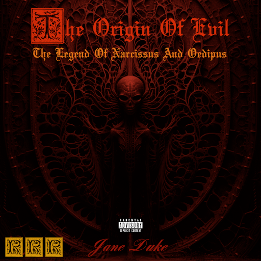

About the Album
The Origin Of Evil is the founding release of Revolutionary Romantic Records. This instrumental grand opera without words tells the story of the ultimate dramatic confrontation between good and evil.
A full scale instrumental Grand Opera of 1 hour and 38 minutes length composed in 3 Acts and 21 movements ! This Grand Opera has a continuous dramatic progression trough the whole work. This work starts with joyful pieces, then the trigger event happens, and the more the listener advances trough the movements, more dark and violent get the themes until the ultimate dramatic climax of the Act III. This work has a great narrative quality as well as its musical one. It has also deep philosophical and political meaning.
Since this album is a Grand Opera, it means it has an underlying story. Here is a brief synopsis of the story behind ''The Origin Of Evil - The Legend Of Narcissus And Oedipus'' .
Act I - The Mortals' Realm
The story begins in a small village, just at the Western border of the huge jungle that separates the continent in two separate parts, Western and Eastern. A group of five friends, a warrior, a knight, a hunter, a writer and a violinist bard are celebrating the yearly Spring Festival in their village. At the time of the sunset, lightning strikes in the middle of the village coming from nowhere. Out of the lightning, a strange character appears, dressed as a jester, and addresses to everyone. He says "Greetings everyone ! I am the messenger of its Absolute Evilness, and I am here to bring you a message from my Master." "You !" Says the Messenger Of Evil pointing her finger towards our 5 friends. "Are going to have the duty to warn your King. Indeed you must now cross the whole continent to warn your King that a gigantic army of undead creatures, is now marching towards your Capital City, led by an Evil Sorceress named Morgana Nibelung. Why would you ask me? Because the Absolute Evil one has decided, once and for all, to declare its most Evil intents. Its Absoute Evilness has decided to invade the Mortals' plane, and to erase any kind of Good willed being that exists. But the Most Evil one has mercy, and decided to warn mortals of the arrival of its armies before it is too late to do anything against its will. After all, would it even be worth it to erase all Good willed beings if there was not at least one epic and bloody battle to conceal this very ending? I wish you all a very good night, a merry Spring Festival, and the best of luck." After saying that, the Messenger Of Evil dissapears. The villagers leave no choice to the adventurers and tell them to leave the village by the sewers, the only direct way to the jungle that separates the continent. They get in the sewers, trough the jungle, and finally reach the other side of the jungle after one month of travel. Once they arrive, they have a direct look at the army of undead creatures, and it is enormous. They rush their way towards the capital city, and midway, they meet with the King's army, which have been warned before they arrived of the coming of the undead creatures army. Our adventurers still succeed to convince their King, that to have the best chances against the army of Evil, they must let the undead walk trough the Kingdom, and wait for the ennemies army inside the strongest fortress of the continent, The walls of the Capital City. Our heroes and the King's Army have time to get back to the Capital City. Once there, they start planning battle strategies, deploying seige weapons on the walls, and training intensively for the following week. Then, the Army of Evil has now reached the walls of the Capital City. The whole plains in front of the walls, are filled with obstacles for slowing the ennemy down and keeping most of them at a distance of the walls. Trenches were also digged in front of the walls to make the climbing of ennemies more difficult despite their ladders. The Battle begins, bloody, violent, and merciless. After a few days of seige and numerous assaults of the walls, the King's army is still standing, but it is weakened. And worse, the Lords, who were supposed to come for help, and take the undead forces from behind, have betrayed their King, because Morgana Nibelung corrupted them with promises of wealth and power. A few days after fighting both the undead and the corrupted Lords' armies, the King's and our adventurers' position has weakened by a lot. In an ultimate war effort, the King and our adventurers decide to attempt their own assault in order to pierce trough the ennemies armies, and taking down the head of the ennemies, Morgana Nibelung. This is the most violent and the most decisive moment of the whole siege. The remaining forces of the King succeed to break trough the undead army, and orders our adventurers, to directly assault on Morgana. After dozens of minutes of a brutal and merciless fight, our adventurers successfully take the advantage over the Evil Sorceress, and finally, the hunter suceeds planting an arrow directly in her heart, mortally wounding her. The summoned undead start to disappear as soon as Morgana was hit. And the corrupted Lords, flee immediately after. But this is no time to celebrate victroy, because many good people have died in this battle, and the writer is mortally wounded, and dies a few minutes after the battle ends. After this, the adventurers bury their friend.
Act II - Descent Into Hells
At the end of the burial, in the graveyard, when only our adventurers are left, the Evil's Messenger shows back. He tells the adventurers he offers them a chance to bring their friend back to life. In order to save their friend they will have to follow him into Hells, and cross the three main parts of Hells, representing the three pillars of Evil and Hells. Death, Pathological Lying, and Torture. Our adventurers successfully cross all of the main Hells, and finally get in front of a horrifying Gate. It is the Gate of the Archdevil's palace.
Act III - Duel Against The Archdevil
The Evil's Messenger waits for them just in front of the Gate, and gives the bard a pile of sheet music titled Brutal Death Symphony. He tells the bard, in order to save their friend, he must defeat the Archdevil, by playing the most difficult violin concerto ever written. This concerto was written by the Archdevil himself. And our bard must play the whole concerto, in sight-reading, while the Archdevil and its servants try to kill him and the three other adventurers. The Evil's Messenger opens the Gate, and our adventurers enter the palace.